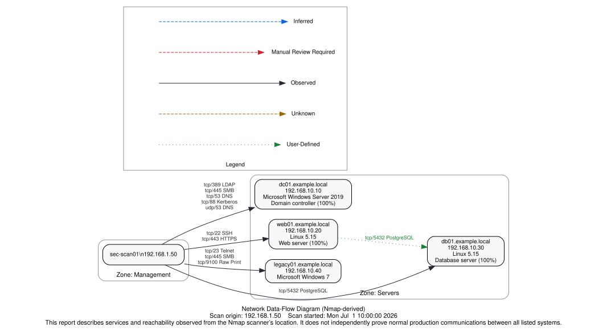

Executive summary
The scan parsed 4 hosts with 11 open services, producing 8 candidate inbound and 1 candidate outbound firewall exceptions. 10 items require manual review and 5 exposed services were rated High or Critical. All rules are proposals scoped to the evidence; none should be implemented without the validation steps in the Methodology section.
Scan metadata
- Command line:
nmap -sS -sU -sV -O --script vuln,smb-protocols -oX sample-scan.xml 192.168.10.0/24 - Nmap version: 7.95
- Started: Mon Jul 1 10:00:00 2026; finished: Mon Jul 1 10:06:40 2026 (4 hosts up)
- Scan types: syn, udp
- Source file: sample-scan.xml
Data-flow diagram

Host inventory (4)
| Hostname | IP | Zone | Inferred role | Role source | OS guess | MAC vendor | State | Open ports | Owner | Purpose |
|---|---|---|---|---|---|---|---|---|---|---|
| dc01.example.local | 192.168.10.10 | Servers | Domain controller (100%) | user configuration | Microsoft Windows Server 2019 | VMware | up | 5 | Directory Services | Primary AD DS |
| web01.example.local | 192.168.10.20 | Servers | Web server (100%) | user configuration | Linux 5.15 | VMware | up | 2 | AppOps | Intranet portal |
| db01.example.local | 192.168.10.30 | Servers | Database server (100%) | user configuration | Linux 5.15 | up | 1 | Data Platform | Portal database | |
| legacy01.example.local | 192.168.10.40 | Servers | Unknown | xml evidence | Microsoft Windows 7 | up | 3 |
Service inventory (15)
| Host | IP | Proto | Port | State | Service | Detected | Product | Version | Risk | Encryption | Evidence |
|---|---|---|---|---|---|---|---|---|---|---|---|
| dc01.example.local | 192.168.10.10 | tcp | 53 | open | DNS | domain | Simple DNS Plus | Low | Cleartext | Observed | |
| dc01.example.local | 192.168.10.10 | tcp | 88 | open | Kerberos | kerberos-sec | Microsoft Windows Kerberos | Low | Unknown | Observed | |
| dc01.example.local | 192.168.10.10 | tcp | 389 | open | LDAP | ldap | Microsoft Windows Active Directory LDAP | Medium | Cleartext | Observed | |
| dc01.example.local | 192.168.10.10 | tcp | 445 | open | SMB | microsoft-ds | High | Unknown | Observed | ||
| dc01.example.local | 192.168.10.10 | udp | 53 | open | DNS | domain | Low | Cleartext | Observed | ||
| dc01.example.local | 192.168.10.10 | udp | 123 | open|filtered | NTP | ntp | Informational | Cleartext | Manual Review Required | ||
| web01.example.local | 192.168.10.20 | tcp | 22 | open | SSH | ssh | OpenSSH | 9.6p1 | Low | Encrypted (protocol default; not independently verified) | Observed |
| web01.example.local | 192.168.10.20 | tcp | 80 | closed | HTTP | http | Informational | Cleartext | Unknown | ||
| web01.example.local | 192.168.10.20 | tcp | 443 | open | HTTPS | http | nginx | 1.24.0 | Low | Encrypted (TLS tunnel reported) | Observed |
| web01.example.local | 192.168.10.20 | tcp | 8443 | filtered | Alternate HTTPS | https-alt | Informational | Encrypted (protocol default; not independently verified) | Unknown | ||
| db01.example.local | 192.168.10.30 | tcp | 5432 | open | PostgreSQL | postgresql | PostgreSQL DB | 16.3 | High | Unknown | Observed |
| db01.example.local | 192.168.10.30 | udp | 161 | open|filtered | SNMP | snmp | Informational | Cleartext | Manual Review Required | ||
| legacy01.example.local | 192.168.10.40 | tcp | 23 | open | Telnet | telnet | High | Cleartext | Observed | ||
| legacy01.example.local | 192.168.10.40 | tcp | 445 | open | SMB | microsoft-ds | Microsoft Windows 7 - 10 microsoft-ds | Critical | Unknown | Observed | |
| legacy01.example.local | 192.168.10.40 | tcp | 9100 | open | Raw Print | jetdirect | High | Cleartext | Observed |
High-risk findings (5)
| Host | IP | Proto | Port | State | Service | Detected | Product | Version | Risk | Encryption | Evidence | Reasons |
|---|---|---|---|---|---|---|---|---|---|---|---|---|
| legacy01.example.local | 192.168.10.40 | tcp | 445 | open | SMB | microsoft-ds | Microsoft Windows 7 - 10 microsoft-ds | Critical | Unknown | Observed | SMB exposed; restrict to trusted zones; SMBv1 dialect enabled per NSE output; Possible end-of-life software: Microsoft OS past end of support (verify manually; version detection is not proof); NSE script 'smb-vuln-ms17-010' reports VULNERABLE state | |
| dc01.example.local | 192.168.10.10 | tcp | 445 | open | SMB | microsoft-ds | High | Unknown | Observed | SMB exposed; restrict to trusted zones; SMBv1 dialect enabled per NSE output | ||
| db01.example.local | 192.168.10.30 | tcp | 5432 | open | PostgreSQL | postgresql | PostgreSQL DB | 16.3 | High | Unknown | Observed | Database service exposed outside an approved application/management scope |
| legacy01.example.local | 192.168.10.40 | tcp | 23 | open | Telnet | telnet | High | Cleartext | Observed | Telnet: cleartext remote administration; Possible end-of-life software: Microsoft OS past end of support (verify manually; version detection is not proof) | ||
| legacy01.example.local | 192.168.10.40 | tcp | 9100 | open | Raw Print | jetdirect | High | Cleartext | Observed | Printer service exposed; restrict to print servers/users; Possible end-of-life software: Microsoft OS past end of support (verify manually; version detection is not proof) |
Observed flows (11)
Reachability from the scanner's location only.
| ID | Source | Src IP/CIDR | Src zone | Destination | Dst IP | Proto | Port | Service | Evidence | Combined evidence | Perspective | Conf. | Risk | Evidence detail |
|---|---|---|---|---|---|---|---|---|---|---|---|---|---|---|
| F-0001 | sec-scan01 | 192.168.1.50 | Management | dc01.example.local | 192.168.10.10 | tcp | 53 | DNS | Observed | Observed | destination-inbound | 90 | Low | Nmap observed tcp/53 open on 192.168.10.10 (state reason: syn-ack). This confirms reachability from the scanner's location only. |
| F-0002 | sec-scan01 | 192.168.1.50 | Management | dc01.example.local | 192.168.10.10 | tcp | 88 | Kerberos | Observed | Observed | destination-inbound | 90 | Low | Nmap observed tcp/88 open on 192.168.10.10 (state reason: syn-ack). This confirms reachability from the scanner's location only. |
| F-0003 | sec-scan01 | 192.168.1.50 | Management | dc01.example.local | 192.168.10.10 | tcp | 389 | LDAP | Observed | Observed | destination-inbound | 90 | Medium | Nmap observed tcp/389 open on 192.168.10.10 (state reason: syn-ack). This confirms reachability from the scanner's location only. |
| F-0004 | sec-scan01 | 192.168.1.50 | Management | dc01.example.local | 192.168.10.10 | tcp | 445 | SMB | Observed | Observed | destination-inbound | 90 | High | Nmap observed tcp/445 open on 192.168.10.10 (state reason: syn-ack). This confirms reachability from the scanner's location only. |
| F-0005 | sec-scan01 | 192.168.1.50 | Management | dc01.example.local | 192.168.10.10 | udp | 53 | DNS | Observed | Observed | destination-inbound | 90 | Low | Nmap observed udp/53 open on 192.168.10.10 (state reason: udp-response). This confirms reachability from the scanner's location only. |
| F-0006 | sec-scan01 | 192.168.1.50 | Management | web01.example.local | 192.168.10.20 | tcp | 22 | SSH | Observed | Observed | destination-inbound | 90 | Low | Nmap observed tcp/22 open on 192.168.10.20 (state reason: syn-ack). This confirms reachability from the scanner's location only. |
| F-0007 | sec-scan01 | 192.168.1.50 | Management | web01.example.local | 192.168.10.20 | tcp | 443 | HTTPS | Observed | Observed | destination-inbound | 90 | Low | Nmap observed tcp/443 open on 192.168.10.20 (state reason: syn-ack). This confirms reachability from the scanner's location only. |
| F-0008 | sec-scan01 | 192.168.1.50 | Management | db01.example.local | 192.168.10.30 | tcp | 5432 | PostgreSQL | Observed | Observed | destination-inbound | 90 | High | Nmap observed tcp/5432 open on 192.168.10.30 (state reason: syn-ack). This confirms reachability from the scanner's location only. |
| F-0010 | sec-scan01 | 192.168.1.50 | Management | legacy01.example.local | 192.168.10.40 | tcp | 23 | Telnet | Observed | Observed | destination-inbound | 90 | High | Nmap observed tcp/23 open on 192.168.10.40 (state reason: syn-ack). This confirms reachability from the scanner's location only. |
| F-0011 | sec-scan01 | 192.168.1.50 | Management | legacy01.example.local | 192.168.10.40 | tcp | 445 | SMB | Observed | Observed | destination-inbound | 90 | Critical | Nmap observed tcp/445 open on 192.168.10.40 (state reason: syn-ack). This confirms reachability from the scanner's location only. |
| F-0012 | sec-scan01 | 192.168.1.50 | Management | legacy01.example.local | 192.168.10.40 | tcp | 9100 | Raw Print | Observed | Observed | destination-inbound | 90 | High | Nmap observed tcp/9100 open on 192.168.10.40 (state reason: syn-ack). This confirms reachability from the scanner's location only. |
Inferred flows (0)
Derived from roles/configuration; unverified until validated.
None.
User-defined and review-flagged flows (2)
| ID | Source | Src IP/CIDR | Src zone | Destination | Dst IP | Proto | Port | Service | Evidence | Combined evidence | Perspective | Conf. | Risk | Evidence detail |
|---|---|---|---|---|---|---|---|---|---|---|---|---|---|---|
| F-0009 | web01.example.local | 192.168.10.20 | Servers | db01.example.local | 192.168.10.30 | tcp | 5432 | PostgreSQL | User-Defined | User-Defined | destination-inbound | 80 | Informational | Declared in configuration (defined_flows); not verified by the scan |
| F-0013 | web01.example.local | 192.168.10.20 | Servers | db01.example.local | 192.168.10.30 | tcp | 5432 | PostgreSQL | User-Defined | User-Defined | source-outbound | 80 | Informational | Declared in configuration (defined_flows); not verified by the scan |
Inbound firewall exceptions (candidates) (8)
| ID | Target | Target IP | Source | Destination | Proto | Port | Service | Purpose | Evidence | Combined evidence | Service ev. | Src-scope ev. | Dst-scope ev. | Perspective | Conf. | Risk | Src policy | Dst policy | Matched src policy | Matched dst policy | Policy violation | Recommended action | Scope warning | Policy notes |
|---|---|---|---|---|---|---|---|---|---|---|---|---|---|---|---|---|---|---|---|---|---|---|---|---|
| IN-0001 | dc01.example.local | 192.168.10.10 | 192.168.1.50 | 192.168.10.10 | tcp | 88 | Kerberos | Primary AD DS | Observed | Observed | Observed | Observed | Observed | destination-inbound | 90 | Low | No Policy Defined | No Policy Defined | no | Validate business need, then approve | No approved-network policy applies to this rule | |||
| IN-0002 | dc01.example.local | 192.168.10.10 | 192.168.20.0/24 | 192.168.10.10 | tcp | 389 | LDAP | Primary AD DS | User-Defined | Observed + User-Defined | Observed | User-Defined | Observed | destination-inbound | 80 | Medium | No Policy Defined | No Policy Defined | no | Validate business need, then approve | No approved-network policy applies to this rule | |||
| IN-0003 | dc01.example.local | 192.168.10.10 | 192.168.1.50 | 192.168.10.10 | tcp | 445 | SMB | Primary AD DS | Observed | Observed | Observed | Observed | Observed | destination-inbound | 90 | High | No Policy Defined | No Policy Defined | no | Validate business need, then approve | No approved-network policy applies to this rule | |||
| IN-0004 | dc01.example.local | 192.168.10.10 | 192.168.1.50 | 192.168.10.10 | udp | 53 | DNS | Primary AD DS | Observed | Observed | Observed | Observed | Observed | destination-inbound | 90 | Low | No Policy Defined | No Policy Defined | no | Validate business need, then approve | No approved-network policy applies to this rule | |||
| IN-0005 | web01.example.local | 192.168.10.20 | 192.168.1.50 | 192.168.10.20 | tcp | 443 | HTTPS | Intranet portal | Observed | Observed | Observed | Observed | Observed | destination-inbound | 90 | Low | No Policy Defined | No Policy Defined | no | Validate business need, then approve | No approved-network policy applies to this rule | |||
| IN-0006 | db01.example.local | 192.168.10.30 | 192.168.10.20 | 192.168.10.30 | tcp | 5432 | PostgreSQL | Web application database access | User-Defined | User-Defined | User-Defined | User-Defined | User-Defined | destination-inbound | 80 | Informational | Approved | No Policy Defined | hosts.192.168.10.30.approved_source_networks (192.168.10.20/32) | no | Confirm the declared dependency is still current | |||
| IN-0007 | legacy01.example.local | 192.168.10.40 | 192.168.1.50 | 192.168.10.40 | tcp | 445 | SMB | Observed | Observed | Observed | Observed | Observed | destination-inbound | 90 | Critical | No Policy Defined | No Policy Defined | no | Validate business need, then approve | No approved-network policy applies to this rule | ||||
| IN-0008 | legacy01.example.local | 192.168.10.40 | 192.168.1.50 | 192.168.10.40 | tcp | 9100 | Raw Print | Observed | Observed | Observed | Observed | Observed | destination-inbound | 90 | High | No Policy Defined | No Policy Defined | no | Validate business need, then approve | No approved-network policy applies to this rule |
Outbound firewall exceptions (candidates) (1)
| ID | Target | Target IP | Source | Destination | Proto | Port | Service | Purpose | Evidence | Combined evidence | Service ev. | Src-scope ev. | Dst-scope ev. | Perspective | Conf. | Risk | Src policy | Dst policy | Matched src policy | Matched dst policy | Policy violation | Recommended action | Scope warning | Policy notes |
|---|---|---|---|---|---|---|---|---|---|---|---|---|---|---|---|---|---|---|---|---|---|---|---|---|
| OUT-0001 | web01.example.local | 192.168.10.20 | 192.168.10.20 | 192.168.10.30 | tcp | 5432 | PostgreSQL | Web application database access | User-Defined | User-Defined | User-Defined | User-Defined | User-Defined | source-outbound | 80 | Informational | No Policy Defined | No Policy Defined | no | Confirm the declared dependency is still current | No approved-network policy applies to this rule |
Manual review (10)
| ID | Category | Host | IP | Proto | Port | Finding | Reason | Recommendation |
|---|---|---|---|---|---|---|---|---|
| MR-0001 | Approved-network policy | db01.example.local | 192.168.10.30 | tcp | 5432 | Inbound TCP/5432 (PostgreSQL) from 192.168.1.50 to 192.168.10.30: the rule is outside the approved networks | Rule scope is outside the approved networks of the matched policy | Update approved_source_networks / approved_destination_networks or adjust the rule scope, then re-run |
| MR-0002 | NSE cross-reference | legacy01.example.local | 192.168.10.40 | NSE script 'smb-os-discovery' output references 192.168.10.10 | Script output alone is not credible proof of a production traffic flow | If this relationship is real, declare it in defined_flows or expected_outbound so it becomes a User-Defined flow | ||
| MR-0003 | Policy: always review | legacy01.example.local | 192.168.10.40 | tcp | 23 | Telnet on tcp/23 matches policy.always_manual_review | Organization policy requires human review of this port/service | Review with the firewall owner before implementation |
| MR-0004 | Rule withheld | dc01.example.local | 192.168.10.10 | tcp | 53 | Candidate inbound rule for DNS withheld | Service not listed in the host's approved_services | Resolve the noted concern, then re-run the analysis |
| MR-0005 | Rule withheld | web01.example.local | 192.168.10.20 | tcp | 22 | Candidate inbound rule for SSH withheld | Service not listed in the host's approved_services | Resolve the noted concern, then re-run the analysis |
| MR-0006 | Rule withheld | legacy01.example.local | 192.168.10.40 | tcp | 23 | Candidate inbound rule for Telnet withheld | Matched policy.always_manual_review | Resolve the noted concern, then re-run the analysis |
| MR-0007 | Unapproved service | dc01.example.local | 192.168.10.10 | tcp | 53 | DNS on tcp/53 is not in the host's approved_services list | An approval list exists for this host and this service is absent | Confirm with the system owner before creating a firewall exception |
| MR-0008 | Unapproved service | web01.example.local | 192.168.10.20 | tcp | 22 | SSH on tcp/22 is not in the host's approved_services list | An approval list exists for this host and this service is absent | Confirm with the system owner before creating a firewall exception |
| MR-0009 | Uncertain port state | dc01.example.local | 192.168.10.10 | udp | 123 | udp/123 reported open|filtered | Nmap could not distinguish an open port from a filtered one (common for UDP); treating it as reachable would be unsafe | Verify with a targeted scan (e.g. version probe, --reason), packet capture, or on-host inspection before allowing traffic |
| MR-0010 | Uncertain port state | db01.example.local | 192.168.10.30 | udp | 161 | udp/161 reported open|filtered | Nmap could not distinguish an open port from a filtered one (common for UDP); treating it as reachable would be unsafe | Verify with a targeted scan (e.g. version probe, --reason), packet capture, or on-host inspection before allowing traffic |
NSE vulnerability findings (as reported) (2)
Categories reflect script output only; nothing here is independently confirmed by this tool.
| Host | IP | Proto | Port | NSE script | Category | Output (as reported) |
|---|---|---|---|---|---|---|
| dc01.example.local | 192.168.10.10 | tcp | 445 | smb-protocols | Informational | dialects: NT LM 0.12 (SMBv1) [dangerous, but default] 2.0.2 3.1.1 |
| legacy01.example.local | 192.168.10.40 | tcp | 445 | smb-vuln-ms17-010 | Confirmed by script | VULNERABLE: Remote Code Execution vulnerability in Microsoft SMBv1 servers (ms17-010) State: VULNERABLE IDs: CVE:CVE-2017-0144 Risk factor: HIGH |
Run status
- Application version: nmap-flow-analyzer 1.2.4
- Run ID: 3c0c7119f5e4
- Output mode: staged atomic publication
- Overwrite: disabled
- Spreadsheet sanitization: applied
- Graphviz available: yes
- Graphviz timeout: 60s
- Graphviz rendering: succeeded
- SVG generated this run: yes
- PNG generated this run: yes
- Excel requested: yes
- Excel generated this run: yes
- Scanner source: known (192.168.1.50)
- Enforcement model: endpoint_and_network
- Firewall mode: stateful
- Strict mode: on
- Inferred outbound: disabled
- Zeek input: not requested
- Zeek sensor health: n/a
- Generated artifact count: 16
- Warnings: none
Assumptions
- Nmap results record reachability from the scanner's location at scan time; they are not a passive record of production traffic.
- Only ports reported 'open' are treated as confirmed reachable; 'open|filtered' ports are uncertain and always require manual review; 'filtered' and 'closed' ports never generate allow rules.
- The scan originated from 192.168.1.50 (sec-scan01) in zone 'Management', as declared by the operator (not derivable from the XML).
- Firewall mode is 'stateful': no separate rules are generated for normal response traffic.
- Inferred outbound dependencies are disabled; outbound rules come only from the configuration (or stateless return paths).
- Strict mode is on: overly broad or ambiguous rules were moved to manual review instead of the proposed exception lists.
- Security zones were mapped from the configuration file (Management, Servers, Workstations); hosts outside declared ranges are 'Internal' (local ranges) or 'Unknown'.
Methodology and evidence classes
Flows classified Observed are directly supported by an open port in the Nmap XML and prove reachability from the scanner's location only. Inferred flows are derived from detected services, host roles, or common protocol behavior and are unverified. User-Defined flows come from the YAML configuration. Manual Review Required marks results that could produce an unsafe or overly broad rule. Before implementing any exception, validate it against firewall logs, NetFlow/sFlow, packet capture, Zeek, or SIEM data, and confirm ownership and business purpose with the system owner.
Limitations
Nmap XML does not contain a complete record of communications between systems: it cannot see host-to-host traffic that does not involve the scanner, asynchronous or scheduled dependencies, or traffic blocked between other zones. UDP results are frequently ambiguous (open|filtered). Service and OS detection are heuristics. Version-based findings are not confirmed vulnerabilities.